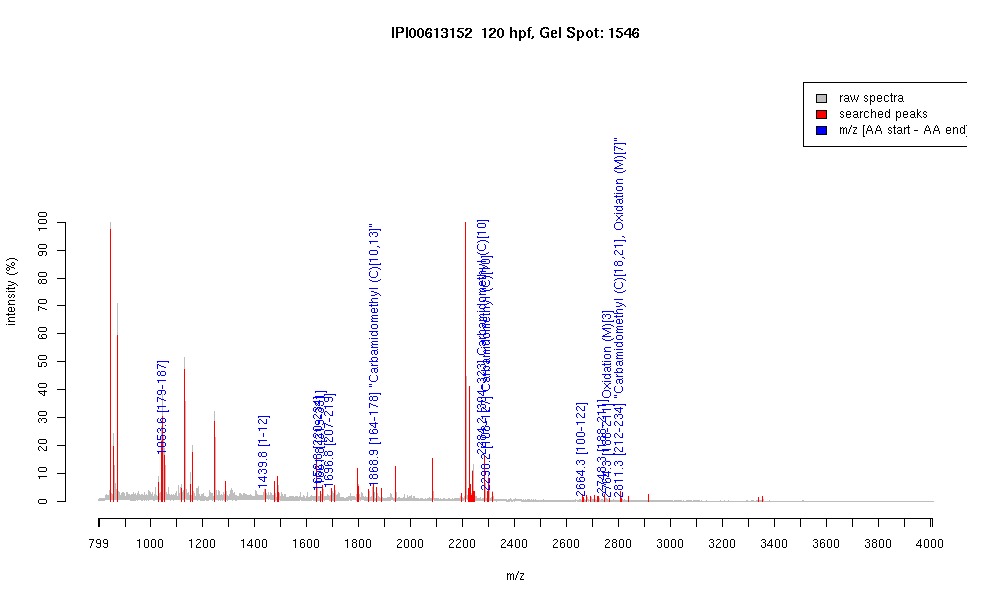

| Name | PREDICTED: similar to gonadotropin inducible ovarian transcription factor 2 |
|---|---|
| MW | 40597.3 |
| PI | 8.94 |
| Mascot Protein Score | 74 |
| Masses (matched / unmatched) | 11 / 65 |

| Peptide | MZ (calc) | MZ (observed) | Error (DA) | Error (PPM) | Start | Stop | Modifications |
|---|---|---|---|---|---|---|---|
| SFTCKLNLK | 1053.5762 | 1053.6064 | 0.0302 | 29 | 179 | 187 | |
| MAFIKEESEDIK | 1439.7086 | 1439.771 | 0.0624 | 43 | 1 | 12 | |
| IHTGEKPHSCQQCGK | 1652.7632 | 1652.8252 | 0.062 | 38 | 220 | 234 | |
| SFTWKQNLIEHMK | 1661.8468 | 1661.8154 | -0.0314 | -19 | 319 | 331 | |
| SFTWKQYLAEHMR | 1696.8264 | 1696.8433 | 0.0169 | 10 | 207 | 219 | |
| IHAGEKPYTCLYCEK | 1868.8669 | 1868.9138 | 0.0469 | 25 | 164 | 178 | "Carbamidomethyl (C)[10,13]" |
| IHSGVKPHSCPQCGKSFTWK | 2284.1113 | 2284.1694 | 0.0581 | 25 | 304 | 323 | Carbamidomethyl (C)[10] |
| IHTGEKPYACQQCGKSFTSR | 2298.0754 | 2298.1794 | 0.104 | 45 | 108 | 127 | Carbamidomethyl (C)[10] |
| QSFTNHMRIHTGEKPYACQQCGK | 2664.2229 | 2664.3149 | 0.092 | 35 | 100 | 122 | |
| NHMIVHTGAKPHTCHQCGKSFTWK | 2748.3069 | 2748.2888 | -0.0181 | -7 | 188 | 211 | |
| NHMIVHTGAKPHTCHQCGKSFTWK | 2764.3018 | 2764.2805 | -0.0213 | -8 | 188 | 211 | Oxidation (M)[3] |
| QYLAEHMRIHTGEKPHSCQQCGK | 2811.2871 | 2811.2849 | -0.0022 | -1 | 212 | 234 | "Carbamidomethyl (C)[18,21], Oxidation (M)[7]" |